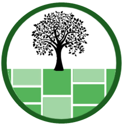

01 / BRANCH
Erumbupalam Branch
Valara P.O, PIN 685561, Kerala
+91 95263 09900 ↗+91 73066 84418 ↗
EDGE STONES & LANDSCAPINGWhatsApp Us ↗GET IN TOUCH
Prices, stock, sizes, delivery — ask us anything.
01 / BRANCH
Valara P.O, PIN 685561, Kerala
+91 95263 09900 ↗+91 73066 84418 ↗02 / HEAD OFFICE
Kanjirapally, Kottayam, Kerala
+91 95264 69900 ↗03 / BRANCH
Kattapana, Kerala
+91 95261 09900 ↗WORKING HOURS
9:00 AM – 6:00 PM
Sunday · by appointment